Florence, Italy 1860-1890
Minchiate di Firenze 1860-1890 (Tarocchi fiorentini)
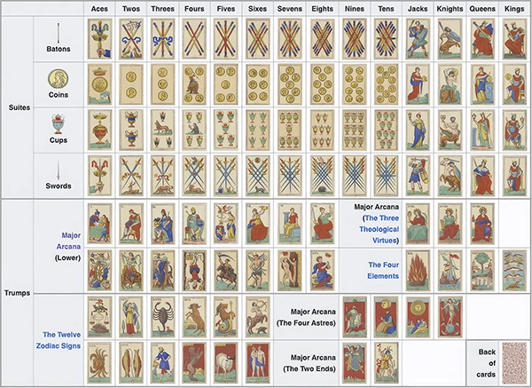
The Minchiate di Firenze is an expanded, 97-card variant of Tarot that originated in Florence, Italy, during the early 16th century. Below are the major cards organized in an optimized 5-column grid mapping the Renaissance cosmos.
| Cards 00 - 04 | ||||
|---|---|---|---|---|
|
Il 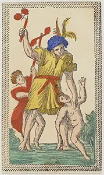 |
01 Papa 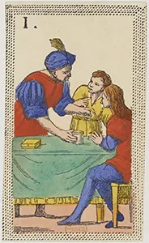 |
02 Papa Due 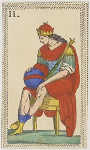 |
03 Papa Tre 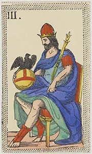 |
04 Papa Quattro 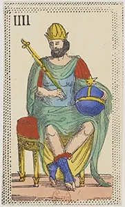 |
| Cards 05 - 09 | ||||
|
05 Papa Cinque 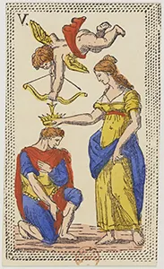 |
06 La 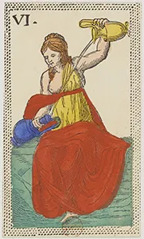 |
07 La 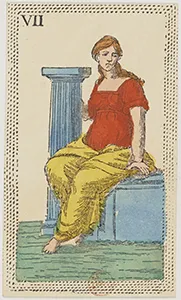 |
08 La 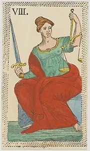 |
09 Ruota della 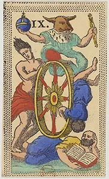 |
| Cards 10 - 14 | ||||
|
10 Il 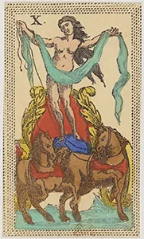 |
11 Il Gobbo 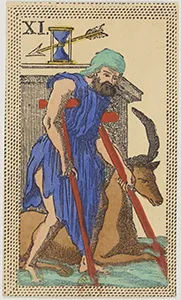 |
12 L'Appeso 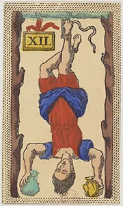 |
13 La 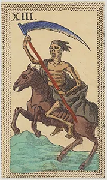 |
14 Il 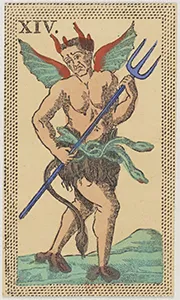 |
| Cards 15 - 19 | ||||
|
15 La Casa 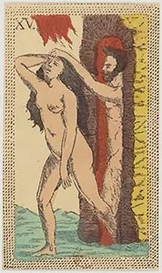 |
16 La 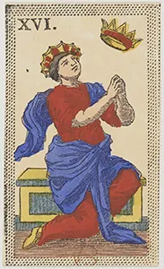 |
17 La 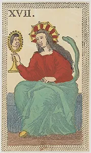 |
18 La 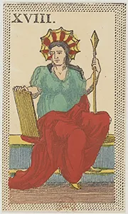 |
19 La 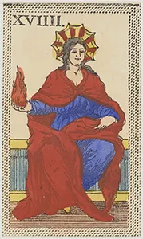 |
| Cards 20 - 24 | ||||
|
20 Il 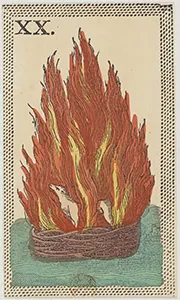 |
21 L'Acqua 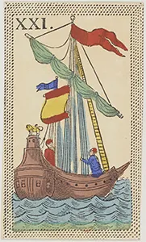 |
22 La 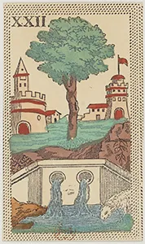 |
23 L'Aria 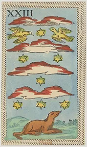 |
24 La 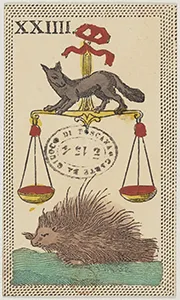 |
| Cards 25 - 29 | ||||
|
25 La 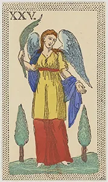 |
26 Lo 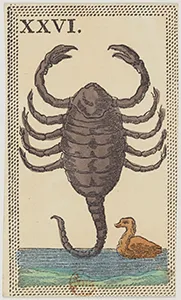 |
27 L'Ariete 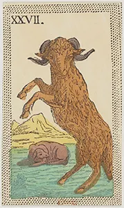 |
28 Il 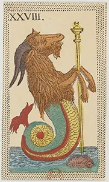 |
29 Il 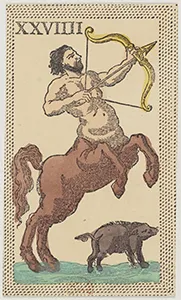 |
| Cards 30 - 34 | ||||
|
30 Il 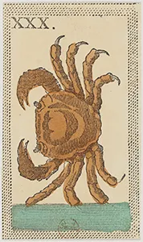 |
31 I 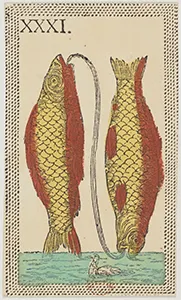 |
32 L'Acquario 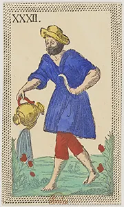 |
33 Il 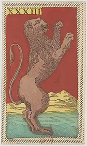 |
34 Il 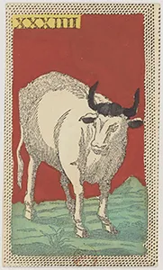 |
| Cards 35 - 39 | ||||
|
35 I 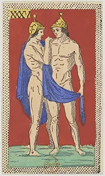 |
36 La 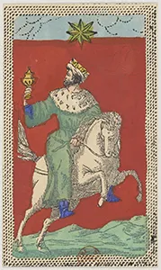 |
37 La 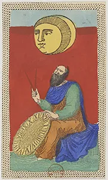 |
38 Il 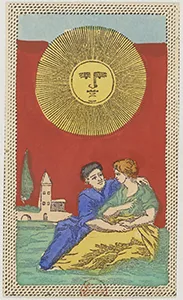 |
39 Il 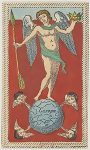 |